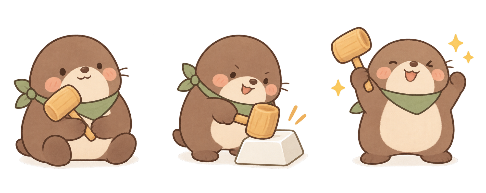
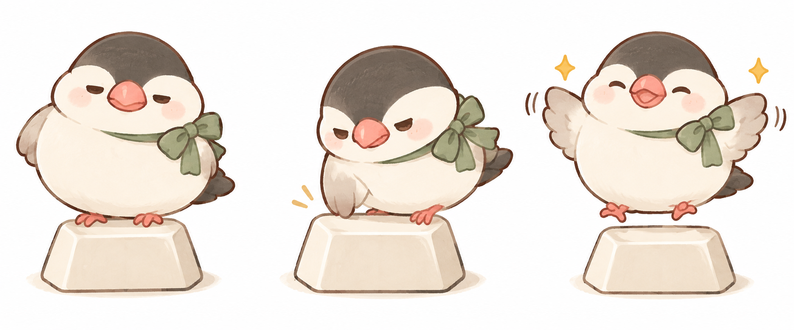
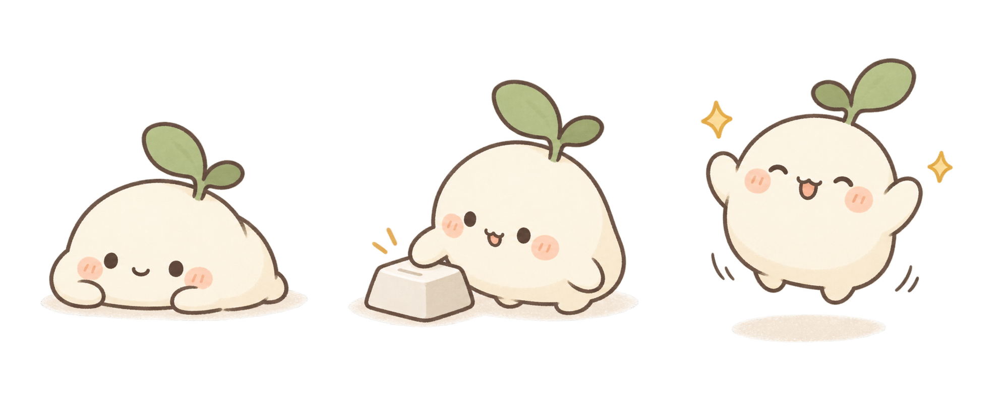

三位小伙伴，三种性格。这些角色设计已用于练习伙伴，可在主页选择，陪你一起成长。
平时抱着小木槌发呆，开练时认真敲字。敲完一轮，开心地举起小木槌。

一只把键帽当小窝的文鸟。平时困困的，敲字很认真，学完就扑棱翅膀。

软乎乎的小团子，脑袋上的嫩芽随练习慢慢生长。每完成一轮，就开心地弹一下。

圆润的小木槌、一颗键帽、一点敲击的星光。和敲敲鼹一起组成项目形象。
建议先做一位角色、三个成长阶段。完成练习即可成长，四种记忆评分获得相同奖励。